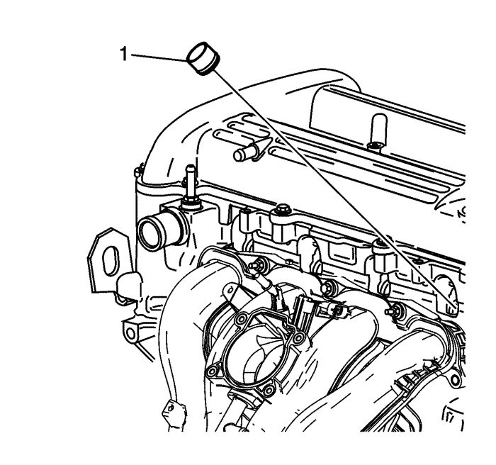
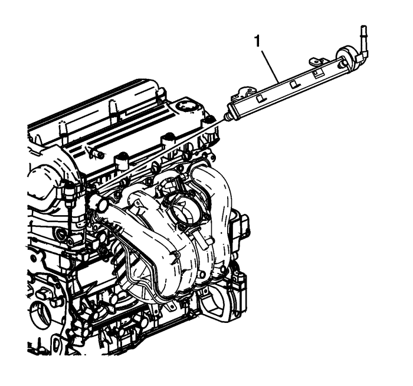
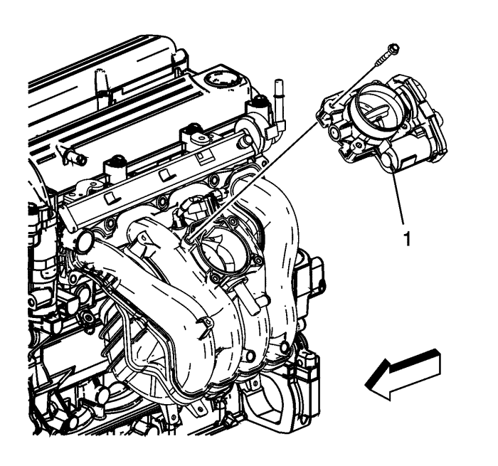

Captiva
Montaje del colector de admisión — LAT, LE5, LE8, LE9
Precaución:
Consulte
Precaución con las fijaciones
en la sección Prólogo
Monte los espárragos (1) del colector de admisión en el lado del colector y apriete a
6 N·m (53 lib. pulg.)
.
Monte una nueva junta del colector de admisión en el colector de admisión (1).
Monte el colector de admisión.
Coloque los tornillos y tuercas del colector de admisión. Apriete a mano.
Apriete los pernos y tuercas del colector de admisión en secuencia a
10 N·m (89 lib. pulg.)
.

Lubrique los NUEVOS aislantes (1) de la broca del inyector de combustible con aceite de motor.
Monte NUEVOS aislantes de broca del inyector de combustible.

Lubrique los anillos de engrase del inyector de combustible con aceite de motor.
Monte la rampa de inyectores de combustible (1).
Monte el fijador del tubo de distribución de combustible y apriételo a
10 N·m (89 lib. pulg.)
.

Monte una junta nueva del cuerpo de mariposa.
Monte el cuerpo del acelerador (1).
Monte los tornillos del cuerpo de la mariposa y apriételos hasta
10 N·m (89 lib. pulg.)
.
Monte la válvula (2) del recipiente y apriétela a
25 N·m (18 lib. pie)
.
Monte el tubo (1) de la válvula del recipiente EVAP
© Copyright Chevrolet Europe. All rights reserved